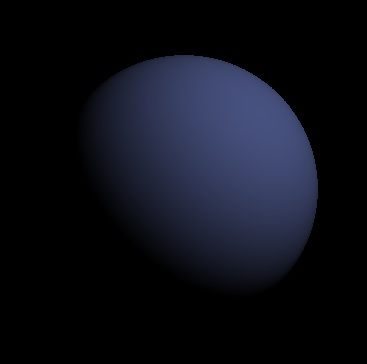
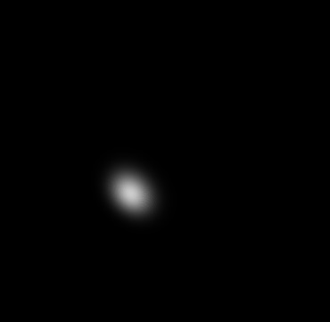
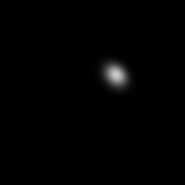
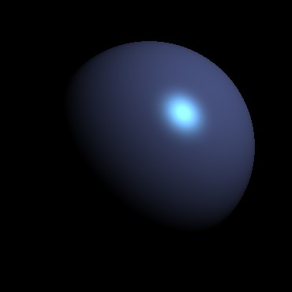
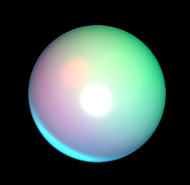
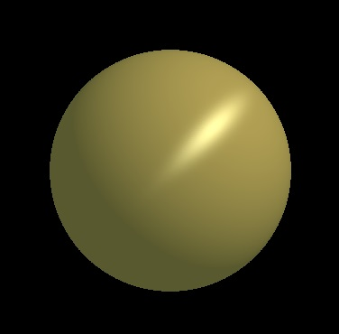
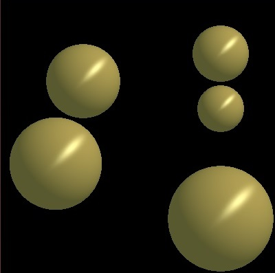
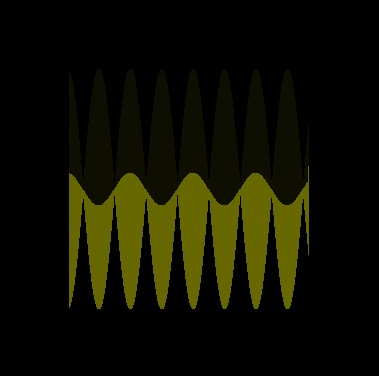

Assignment 1
Basic Image(s):
Diffuse only, Single point light source

-pl 200 200 200 0.4 0.8 1.0 -kd 0.7 0.4 0.5
Phong Specular only, Single directional light source

-dl 1 1 -1 0.8 0.8 0.8 -ks 1.0 1.0 1.0 -sp 20
Phong Specular only, Single point light source

-pl 200 200 200 0.8 0.8 0.8 -ks 1.0 1.0 1.0 -sp 20
Diffuse + Phong Specular, Single point light source

-pl 200 200 200 0.4 0.8 1.0 -kd 0.7 0.4 0.5 -ks 1.0 1.0 1.0 -sp 20
Diffuse + Phong Specular + Ambient, Multi light source

-dl 0 0.2 -1 1 1 1 -dl 1 -1 -1 0.5 0 0 -dl -1 -1 -1 0 1 0 -pl 10 10 30 0 0.1 0 -pl -4 -6 -10 0 1 1 -ka 0 0.1 0.2 -kd 0.7 0.4 0.5 -ks 1.0 1.0 1.0 -sp 20
Extra Credit Image(s):
Ward Anisotropic

-dl -1 -1 -1 0.5 0.7 0.3 -ka 0.7 0.5 0.6 -kd 0.7 0.4 0.5 -kw 0.4 0.3 0.6 -kwv 1 1 -1 -kwc 0.1 0.4
Ward Anisotropic, Multi-spheres

-dl -1 -1 -1 0.5 0.7 0.3 -ka 0.7 0.5 0.6 -kd 0.7 0.4 0.5 -kw 0.4 0.3 0.6 -kwv 1 1 -1 -kwc 0.1 0.4 -multi
Diffuse + Phong Specular + Ambient, Wave-like surface (sin(x) * cos(z)), [Sort-of broken]

./as1 -pl 200 200 200 0.6 0.6 0.6 -kd 1 1 0 -ka 0.1 0.1 0 -ks 0.8 0.8 0.8 -sp 16 -wave
Back